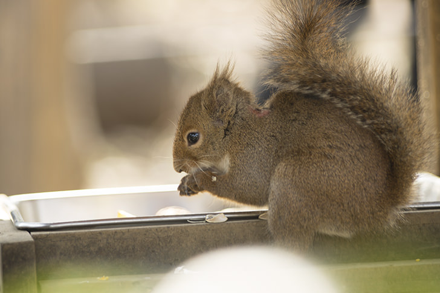

| リスとは |
アジアの熱帯地方では、14属65種もの樹木性リスが確認されています。
マーモット、プレーリードッグ、シマリス、イワリス、ジリスもリスの仲間です。
頬の内側に「頬袋」と呼ばれる袋状の構造があります。柔軟性があり、たくさんの食物を頬張って運ぶことができます。 |
| アンサー① |
（ ネズミ ）目リス科に属する動物の総称です。 |
|
|
リス科には、5亜科58属285種が含まれます。
現生のリスの系統分類は単純な構造で、おもに3つの系統に分かれています。
|
| アンサー② |
（ 滑空能力 ）のあるモモンガやムササビもリスの仲間です。 |
|
|
モモンガやムササビは、木から木へと滑空して移動する際にパラシュートの様な働きをする飛膜を持ちます。
|
| アンサー③ |
地上性リスは樹上性リスに比べて（ 尾 ）の毛量が少なく、短いものが多く見られます。 |
|
|
多くのリスは、体毛がやわらかく滑らかですが、中には厚い毛皮を持つものも存在します。
中世ヨーロッパではリスの毛皮は珍重されており、腹部の白い毛を用いるヴェア（ヴェール）は最高級品でした。
|
| アンサー④ |
顔のひげや脚の触毛で場所の幅を認識するなど、優れた（ 体性感覚 ）を持っています。 |
|
|
大きな目をもち、視覚は優れています。足の裏にはやわらかい肉球があります。
|
| アンサー⑤ |
メスの妊娠期間は（ 3~6 ）週間で、年に1～2回出産します。 |
|
|
子供は毛も歯も生えておらず、目も見えない状態で生まれます。ほとんどの種はメスのみが子供の世話をします。
|
| アンサー⑥ |
樹上性のリスは、種子を土に埋めるなどといった（ 貯食行動 ）を行います。 |
|
|
おもに草食性で、木の実、種子、果実、キノコ、草などの多様多種な植物を食べます。
ムササビは種子や果実が欠乏する季節には、木の葉を食すことがあります。
|